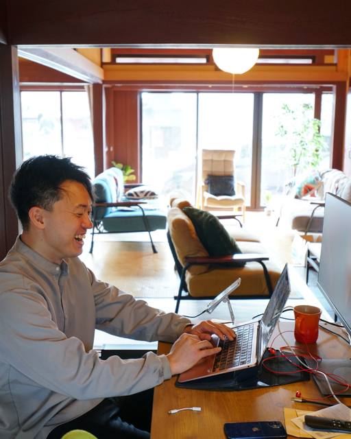
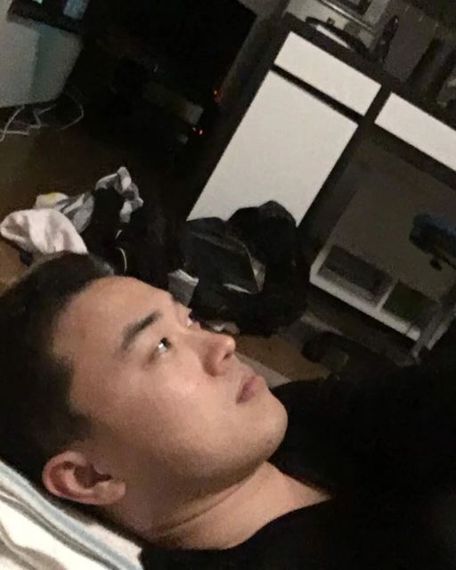
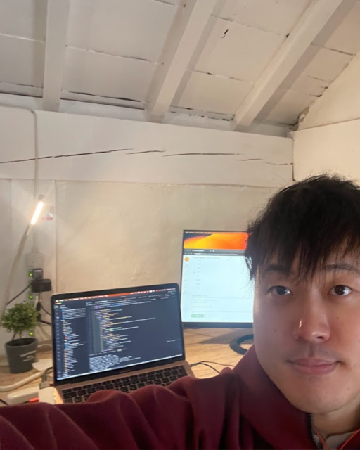
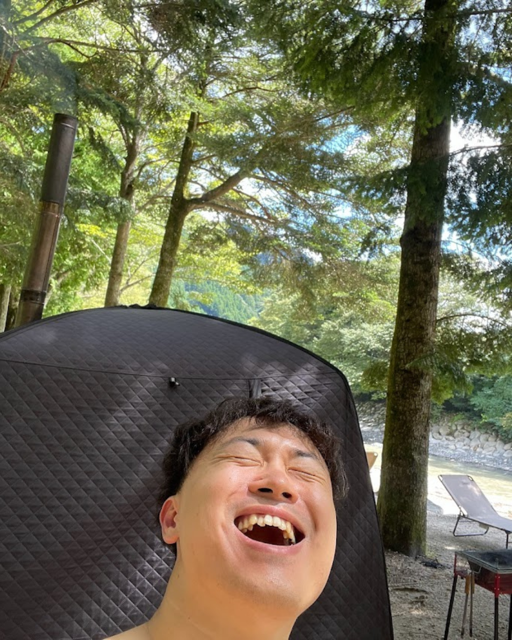
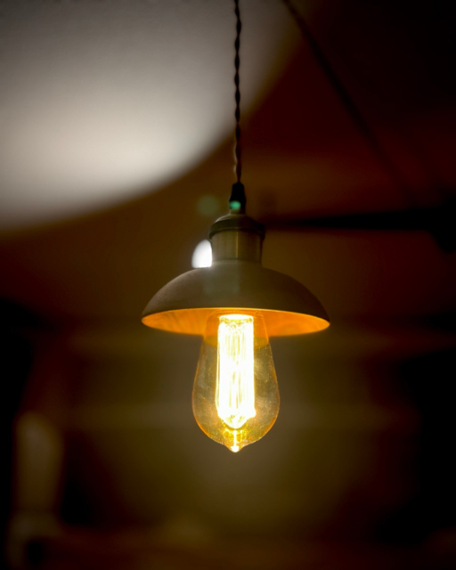
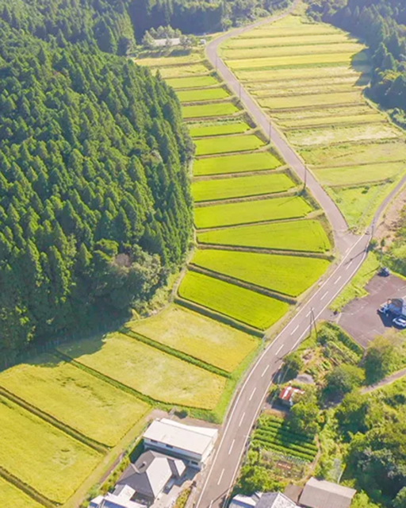
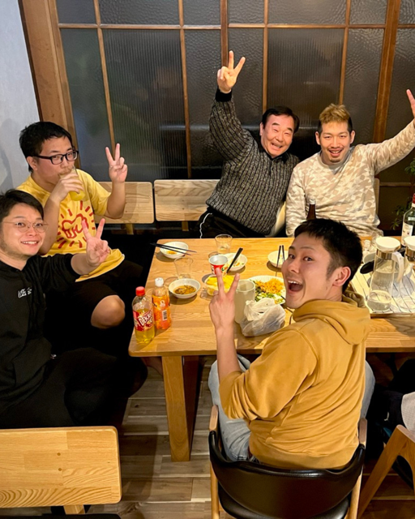

第1章はじめまして、若さ健太です
東京から豊かな自然を求めて、甲賀の最果てに移住してきました。1994年8月15日生まれ。趣味はコーヒーとDIY。カフェ店主をしながら、プログラマーとしてアプリも作っています。
“都会で疲弊している場合じゃない。豊かな暮らしは甲賀にある！”
それをみんなに知ってほしくて、若さあふれる甲賀の魅力を発信しています。
東京で働き詰めの日々。心と体をすり減らし生き方を探し求めた末にたどり着いたのが甲賀の最果て山女原（あけびはら）でした。豊かな自然、あたたかい人たち。都会で見失っていた「豊かさ」がここにはあふれています。
この豊かさを守り、次の世代へつなぐために、政治家になりました。「甲賀の魅力を発信すること」と「若者の夢あふれる居場所をつくること」の2つを軸に、地域のみなさんと手を取り合い、100年続くまちづくりに挑戦します。
エンジニア × カフェ店主 × 移住者。3つの視点で甲賀の課題を解決します。
車がないと病院にも買い物にも行きづらい。広い甲賀では、免許を返納した後の暮らしに不安を抱える方が少なくありません。
ライドシェアの利便性向上などで、いつでも自宅からどんな場所にもアクセスできる環境を整備。どこに住んでいても教育・福祉・行政サービスを受けられるやさしい社会へ。
人口減少と空き家の増加で、学校・商店・お祭りなど、地域の機能が少しずつ失われつつあります。
定住支援金を新設し、空き家に子育て世帯を呼び込みます。全世代が助け合い、地域機能を維持しながら、持続可能な地方都市をつくります。
手続きのたびに遠い窓口まで足を運ぶ負担。職員も事務作業に追われ、市民一人ひとりに向き合う時間が足りません。
自宅で簡単に申請できる、誰にとってもやさしいデジタル化を推進。効率化で職員の負担を減らし、血の通った行政組織を目指します。
現役エンジニアだからこそできる、現場目線のまちづくりを進めます。
政治家としていちばん大切にしている、3つの約束です。
市民の声を議会に届ける。これが政治家の仕事です。困っている当事者と会い、とことん聞きます。現場の声を大切にします。
多様な思想や価値観を尊重します。ルールで個性を押さえつけるのではなく、ルールで個の可能性が解放される社会を実現します。
偏った思想を持たず、幅広い意見を取り入れます。批判をするだけでなく、真に市民のためになる現実的な提案を行い、実行します。
なぜ東京を離れ、甲賀の最果てで政治家になったのか。

第1章東京から豊かな自然を求めて、甲賀の最果てに移住してきました。1994年8月15日生まれ。趣味はコーヒーとDIY。カフェ店主をしながら、プログラマーとしてアプリも作っています。
“都会で疲弊している場合じゃない。豊かな暮らしは甲賀にある！”
それをみんなに知ってほしくて、若さあふれる甲賀の魅力を発信しています。

第2章子供の頃から夢だったゲーム会社に入社。しかし理想と現実のギャップに悩まされます。深夜まで働いてはコンビニ飯を食べる日々。成果を出せず、人間関係もうまくいかず、どんどん居場所をなくしていきました。
蔓延するコロナウイルス。大都会、ぽつんとひとりぼっち。鬱で低音難聴にまで追い詰められ、「生きるってなんだろう？」と自問自答する日々を過ごしました。

第3章退職してアプリ開発エンジニアに転身。「年収1000万円稼ぐぞ！」と気合を入れて、1年で目標を達成しました。しかし、稼いでもなぜか満たされない。
作ったサービスはすぐに終了し、会社も次々と倒産。「本当に社会のためになっているのか？」——ここから、自分なりの生き方を探求し始めます。

第4章思い切って滋賀の古民家を購入！仲間を集めてシェアハウスを立ち上げました。筋トレジム作り、川でサウナ&BBQ、ゼロからサウナ小屋建築……。
都会で窮屈に夢を追うだけが人生じゃない。自然の中で思いっきり生きる。やりたいことをとことんやる。豊かな暮らしがここにあると確信しました。

第5章結婚を機に甲賀の最果て・山女原（あけびはら）にお引越し。夫婦二人三脚で古民家をリノベして「泊まれるカフェやわらかそう」をオープンしました。
地元のみんなが気軽に集まれて、訪れた人が豊かさを再発見できる。自然とみんながやわらかく溶け合う、そんな場所を目指しています。

第6章移住先に求めていたのは、とにかく自然が豊かで、古きよき古民家があり、家と家とが離れていて、ちょっと頑張ればたどり着ける場所。正直、日本全国を探せば同じ条件の田舎は他にもあると思います。
でも、ここに住んでいる方々が本当に魅力的なんです！みなさんのとりこになってしまったので、もう離れられません。

最終章地域のみなさんと手を取り合い、100年続くまちづくりをしていきます。軸は2つ。甲賀の魅力を発信すること、そして若者の夢あふれる居場所をつくること。
どうか、この「若さ」の挑戦を見守ってください！
最新の活動報告は、Instagramとnoteで発信しています。
「ちょっと気になる」「頑張れって思ってる」——それだけで十分です。
あなたに合った方法で、力を貸してください。
会費や料金は一切かかりません。
ボランティアのお願いをすることはありますが、強制は一切ありません。
年4回ほど、活動報告レポートを郵送でお届けします。
※ご記入いただいた情報は後援会活動のみに使用します。
ご意見・ご相談・取材のご依頼など、お気軽にご連絡ください。